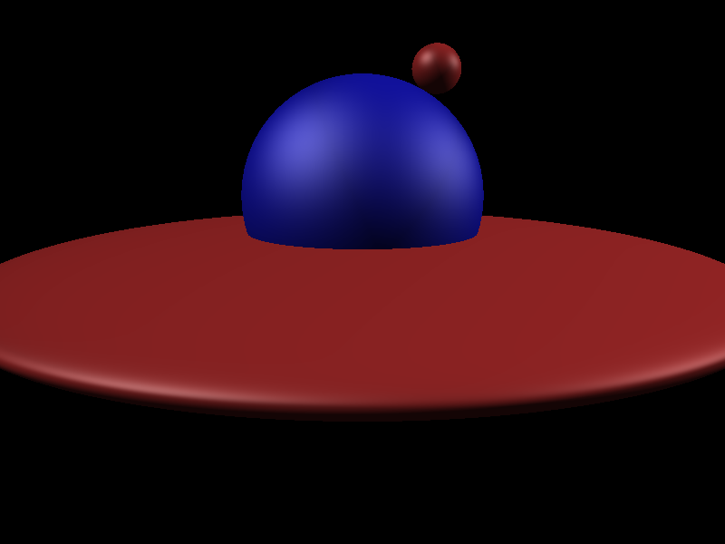
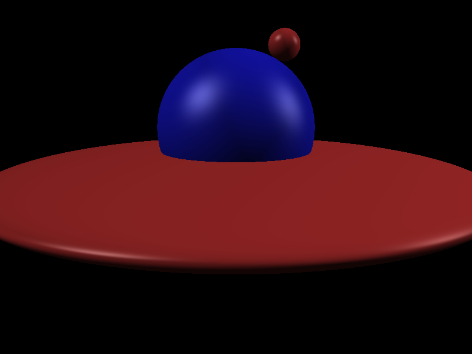

CS6620 - Ray Tracing for Graphics
Project 2 - Shading
Results
Rendered in 0:00:06 with seven threads plus the main thread.
|  |
|
| Rendered Image |
Normalized Z-Buffer |
I also implemented Phong shading.
|
 |
| Blinn Shading |
Phong Shading |
Machine Specs
Running Windows 10 on a Bootcamped MacBook Pro
| Processor |
Intel Core i7 2.50 GHz |
| RAM |
16GB 1600 MHz DDR3 |
| Graphics Card |
Intel Iris Pro 1536 MB |